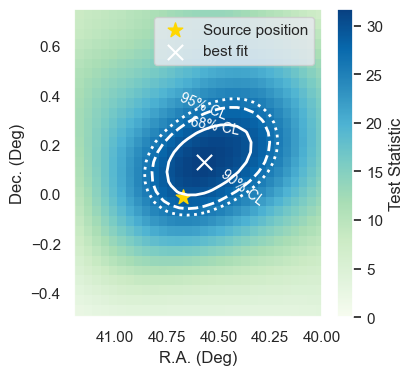

Producing a Sky Scan with IceCube Public 14-year data
This tutorial shows how to produce a Sky scan using the IceCube 14-year public data with SkyLLH.
[14]:
import numpy as np
import matplotlib.pyplot as plt
import seaborn as sns
import sys
sys.path.append("/Users/amithan/skyllh_14/skyllh")
First we have to create a configuration instance.
[3]:
from skyllh.core.config import Config
cfg = Config()
Importing dataset definition of the public 14-year point-source data set and we can get a list of data sets via the access operator [dataset1, dataset2, ...] of the dsc instance: For more details on the create_dataset_collection function see ‘url’
[ ]:
from skyllh.datasets.i3.PublicData_14y_ps import create_dataset_collection
dsc = create_dataset_collection(
cfg=cfg,
base_path='/Users/amithan/Downloads/',
sub_path_fmt='PublicData_14y',
)
print(dsc.dataset_names)
datasets = dsc['IC40', 'IC59', 'IC79', 'IC86_I-XI']
['IC40', 'IC59', 'IC79', 'IC86_I', 'IC86_I-XI', 'IC86_II', 'IC86_III', 'IC86_IV', 'IC86_IX', 'IC86_V', 'IC86_VI', 'IC86_VII', 'IC86_VIII', 'IC86_X', 'IC86_XI']
The analysis used for the published PRL results is referred in SkyLLH as “traditional point-source analysis” and is pre-defined:
[6]:
from skyllh.core.source_model import PointLikeSource
from skyllh.analyses.i3.publicdata_ps.time_integrated_ps import create_analysis
Defining the Source: Here we use NGC 1068 as the source
Once the source is defined the create_analysis function can create the analysis instance
[7]:
src_ra = 40.67 # degrees
src_dec = -0.01 # degrees
source = PointLikeSource(
ra=np.radians(src_ra),
dec=np.radians(src_dec)
)
ana = create_analysis(
cfg=cfg,
datasets=datasets,
source=source
)
100%|██████████| 33/33 [00:30<00:00, 1.09it/s]
100%|██████████| 33/33 [00:31<00:00, 1.04it/s]
100%|██████████| 33/33 [00:48<00:00, 1.48s/it]
100%|██████████| 33/33 [00:23<00:00, 1.38it/s]
100%|██████████| 4/4 [12:38<00:00, 189.53s/it]
100%|██████████| 136/136 [00:00<00:00, 845.70it/s]
Unblinding the data
After creating the analysis instance we can unblind the data for the choosen source. Hence, we initialize the analysis with a trial of the experimental data, maximize the log-likelihood ratio function for all given experimental data events, and calculate the test-statistic value. The analysis instance has the method unblind that can be used for that. This method requires a RandomStateService instance in case the minimizer does not succeed and a new set of initial values for the fit
parameters need to get generated.
[8]:
from skyllh.core.random import RandomStateService
rss = RandomStateService(3090)
TS, bestfit_params, minimizer_status = ana.unblind(rss)
ns_bf = bestfit_params['ns']
gamma_bf = bestfit_params['gamma']
print(f"Unblinded results: TS={TS:.2f}, ns={ns_bf:.2f}, gamma={gamma_bf:.2f}")
print(f"Minimizer status: {minimizer_status}")
Unblinded results: TS=29.15, ns=80.09, gamma=3.21
Minimizer status: {'grad': array([-3.62369895e-06, -2.31360821e-04]), 'task': 'CONVERGENCE: REL_REDUCTION_OF_F_<=_FACTR*EPSMCH', 'funcalls': 13, 'nit': 10, 'warnflag': 0, 'skyllh_minimizer_n_reps': 0, 'n_llhratio_func_calls': 13}
Producing a Sky Scan near the source
A Sky Scan is done over a patch near the source coordinates.
The change_source property of the Analysis instance allows us to do the scan by reinitializing for every new sky coordinates in the scan
change_source method allows to update all is necessary without having to re-initialize the entire analysis instance. One could obtain the same result by re-instantiating a new analysis at each point in the sky, which would be much slower. change_source is an optimized way to carry this out.
[9]:
# Produce a little skyscan around the source location
src_ra = 40.67 # degrees
src_dec = -0.01 # degrees
ra_min = src_ra - 1.0
ra_max = src_ra + 1.0
dec_min = src_dec - 1.0
dec_max = src_dec + 1.0
nbins = 50
edges_x = np.linspace(ra_min, ra_max, nbins+1)
edges_y = np.linspace(dec_min, dec_max, nbins+1)
centers_x = 0.5 * (edges_x[1:]+edges_x[:-1])
centers_y = 0.5 * (edges_y[1:]+edges_y[:-1])
# Initialize the results arrays
results_ts = np.zeros((nbins, nbins), dtype=float)
results_p = np.zeros((nbins, nbins), dtype=float)
results_ns = np.zeros((nbins, nbins), dtype=float)
results_g = np.zeros((nbins, nbins), dtype=float)
for i, ra in enumerate(centers_x):
for j, dec in enumerate(centers_y):
# Change source position to evaluate the likelihood
src_dec = np.radians(dec)
src_ra = np.radians(ra)
source = PointLikeSource(src_ra, src_dec)
ana.change_source(source, update_detsigyield_service=False)
# Unblind the new position
rss=RandomStateService(3090)
(TS, fitparam_dict, status) = ana.unblind(rss)
results_ts[i, j] = TS
# results_p[i, j] = ts_to_pvalue.get_pvalue(TS, src_dec, gamma=gamma)
results_ns[i, j] = fitparam_dict['ns']
results_g[i, j] = fitparam_dict['gamma']
The contours are computed assuming that the Wilks theorem holds true. That is the TS distribution follows the \(\chi^2\) distribution with 2 degrees of freedom
[32]:
from scipy.stats import chi2
ts_max = results_ts.max()
chi2_68_quantile = ts_max - chi2.ppf(0.68, df=2)
chi2_90_quantile = ts_max - chi2.ppf(0.90, df=2)
chi2_95_quantile = ts_max - chi2.ppf(0.95, df=2)
idx = np.unravel_index(results_ts.argmax(), results_ts.shape)
best_dec = centers_y[idx[0]]
best_ra = centers_x[idx[1]]
fig,ax = plt.subplots(figsize=(4,4))
X, Y = np.meshgrid(centers_x, centers_y)
src_ra = 40.67 # degrees
src_dec = -0.01
im = ax.pcolormesh(centers_x, centers_y, results_ts, cmap='GnBu')
ax.invert_xaxis()
contour_68 = ax.contour(centers_x, centers_y, results_ts, levels=[chi2_68_quantile],
colors='w', linestyles='-', linewidths=2)
contour_90 = ax.contour(centers_x, centers_y, results_ts, levels=[chi2_90_quantile],
colors='w', linestyles='--', linewidths=2)
contour_95 = ax.contour(centers_x, centers_y, results_ts, levels=[chi2_95_quantile],
colors='w', linestyles=':', linewidths=2)
ax.scatter([src_ra], [src_dec], marker='*', color = 'gold',s=120, label='Source position')
ax.scatter([best_ra], [best_dec], marker='x', color = 'w',s=120, label='best fit')
ax.set_ylim(-0.5, 0.75)
ax.set_xlim(40, 41.2)
cbar = plt.colorbar(im)
cbar.set_label('Test Statistic')
plt.xlabel('R.A. (Deg)')
plt.ylabel('Dec. (Deg)')
ax.clabel(contour_68,
fmt={chi2_68_quantile: '68% CL'},
fontsize=10,
inline=False,
inline_spacing=5,
manual=[(40.5, 0.2)])
ax.clabel(contour_90,
fmt={chi2_90_quantile: '90% CL'},
fontsize=10,
inline=False,
inline_spacing=5,
manual=[(40.1, -0.3)])
ax.clabel(contour_95,
fmt={chi2_95_quantile: '95% CL'},
fontsize=10,
inline=False,
inline_spacing=5,
manual=[(40.6, 0.4)])
ax.invert_xaxis()
plt.legend()
plt.show()

[ ]:
[ ]: